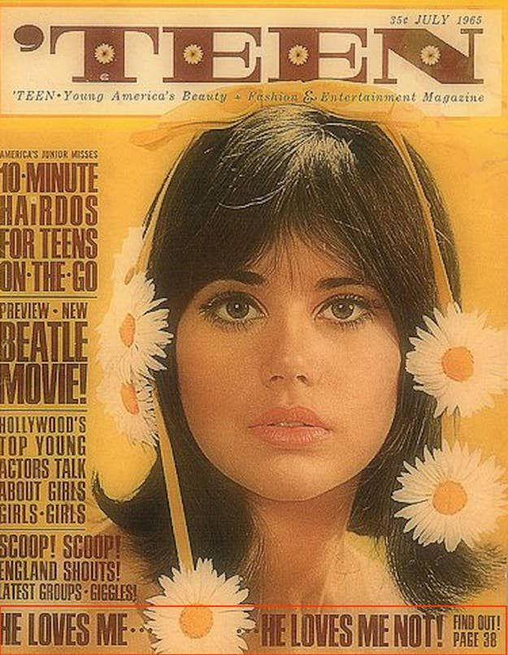

Ce este vintage?
Vintage este un termen folosit pentru a se referi la estetica care evocă o anumită perioadă (sau amestec de perioade) din trecut.
Vintage presupune estetica trecutului, acum e în vogă epoca anilor 90. Se întorc casetele, audio înregistrările. |
Elementele: Cărți antice, muzeele de artă, imagini legate de internat, cum ar fi uniformele și strecurarea, campusuri ale unor universități de prestigiu precum Oxford și Harvard, cafea și ceai, Arhitectura gotică, ziare la cafenele, picturi în perioadele Renașterii, Barocului, Neoclasicului, Academicului, Esteticului și prerafaelitelor, sculptură în perioadele clasice, elenistice, renascentiste, baroce și neoclasice, ceai de plante. |
Look-ul vintage presupune: Topuri, cardigane, pantaloni scurți, fuste strâmte, veste, uniforme, ochelari retro, panglici de păr, Șosete înalte, curele din piele, broșe, berete. | |
|  |